The General Settings tab  includes a set of options to improve the scene workflow, control the terrain object(s) and also allows you to auto generate road networks by importing OSM or KML road data. includes a set of options to improve the scene workflow, control the terrain object(s) and also allows you to auto generate road networks by importing OSM or KML road data.
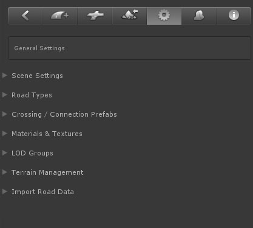
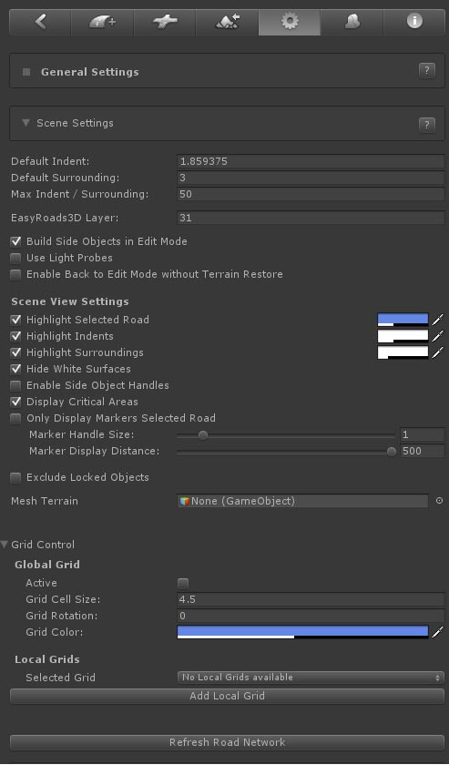
- Default Indent: This gives control over the terrain deformation. The default values are based on the terrains heightmapscale to ensure accurate terrain flattening according the road and crossings shapes. Optionally these values can be increased these here. The Indent value represents the distance from the edge of the roads outwards to the terrain point that should be leveled at the same height of the road at that point to guarantee most optimal terrain deformation results. This value can be tweaked per marker but can never be lower then the Scene Min Indent value. Different default indent values can also be set per road type.
- Default Surrounding: The default surrounding value represents the distance over which the height of the terrain at the Indent position will be leveled with the current terrain height.
- Max Indent/Surrounding: This value will be used as the max for the indent / surrounding slider controls for the selected marker.
- EasyRoads3D Layer: by default EasyRoads3D uses layer 31 for background operations, optionally this can be changed here.
- Build Side Objects in Edit Mode: You can switch this off if you prefer to build the actual side object game objects only in Build Mode.
- Use Light Probs: This will toggle on Use Light Pobes in the Mesh Renderer of the generated road.
- Enable Back to Edit Mode without Terrain Restore. This is added upon request, when switching back to Edit Mode the terrain will not be restored to its original state before switching to Build mode. Please be careful with this!
- Highlight Selected Road: This will highlight the selected road. This can be useful to visualize the road in hilly areas in Edit Mode when part of the road is covered by terrain.
- Highlight Indent Area: This will highlight the Indent area, the terrain area that will be leveled at the same height as the road.
- Highlight Surround Area: This will highlight the terrain area over which the heights will be leveled gradually from the road height to the original terrain height.
- Hide White Surfaces: This will hide the white surfaces surrounding the road and connection objects. Depending on the road shader these white surfaces may render through the road. This can be adjusted by reducing the Offset values towards 0 on the material in /Assets/EasyRoads3D/Resources/Materials/surfaceMaterial
- Enable Side Object Handles: This will display handles in scene view to control for example the Start and End offsets for side objects. The H key can be used for this as well.
- Display Critical Areas: The unity terrain object stores Terrain height data in decimals between 0 and 1. Therefore it is not possible to apply negative height values. Parts that are nearby or below the 0 value will be displayed with red handles. This can be used to quickly double check these critical areas and to make sure the terrain does not break through the roads.
- Only Display Markers Selected Road: only the blue markers of the selected road will be displayed when a road objectis selected.
- Marker Handle Size: This controls the size of the blue marker handles in Scene View.
- Marker Display Distance: This controls the max distance for which handles will be displayed.
- Exclude Locked Objects: When toggled on, no marker handles will be displayed for objects that are locked.
- Mesh Terrain: Alternatively you can use a Mesh terrain instead of the Unity terrain object. Mesh terrains will not be deformed
according the road shape.
- Global Grid [Pro]: This is currently being implemented upon request. When active road markers and connection prefabs will snap to the global grid (and in the future also additonal local grids). This can be useful for city environments.
-
Grid Size: The cell size
- Grid Rotation: The global rotation
- Grid Color: The color of the outlines
- Refresh Road Network: This will rebuild and clean up the road network.
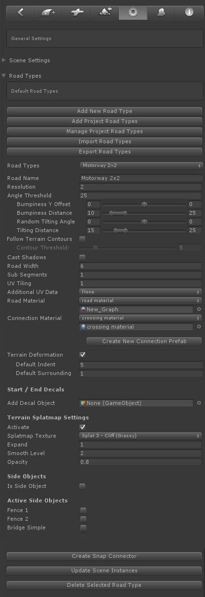
Especially when building complex road networks with different road types it is recommended to setup road presets before actually building your roads in the scene. These presets will be available when adding a new road to the scene or when setting up crossing / connection objects and is an easy way to make sure road types look the same and match with the associated crossing types. You can also link road presets to OSM road types.
Most of the properties refer to the same properties as for road objects in the scene. The other controls are explained below.
- Add New Road Type: This button will create a new road type. It will be selected automatically, you can set the road type name, with and material
- Add Project Road Types: Scene road types are also stored in the list of project road types. This way you can reuse road types across scenes. This button will display all project road types. Those road types already available in the scene will be disabled. This button will be disabled If all project road types are already available in the scene
- Manage Project Road Types: This will list all project road types and allows you to remove old, unused road types. Note that removed road types will added again if they still exist in a scene!
- Import Road Types: This will open a window to import road types from another project [website tutorial]
- Export Road Types: This will open a window to export road types so they can be used in another project [website tutorial]
- Road Types: This dropdown will list all the scene road types
- Road Name: The name of the selected road type in the dropdown
- Resolution: The geometry resolution in meters
- Angle Threshold: This can be used to optimize the road geometry while still maintaining detail is bends. Try values around 5 and increase the road resolution to 10 or 20. The vertex / triangle count will drop significantly
- Bumpiness Y Offset: The smoothness level of the road controllable through Min Max values
- Bumpiness Distance:The distance controlable through Min Max values
- Random Tilting Angles:Adds additional tilting to the road controllable through Min Max values
- Tilting Distance:The distance over which the tilting takes place
- Follow terrain Contours: The road will auto adjust to the terrain shape, this will greatly speed up the workflow as less markers will be required
- Contour Threshold: The lower values the more the road will match the terrain shape, use higher values for roads like motorways
- Layer: the default layer for this road type
- Cast Shadows: The object will cast shadows
- Road Width: The width
of the road
- Sub Segments: This controls sub division. Note that dynamic built-in crossings do not yet support sub segments. In order to use this within the road network oads with sub segments can be attached to an I Connector, the road on the other end of the I Connector can be attached to built-in crossings
- UV Tiling: The tile size of the used texture
- Additional UV Data: Optionally more UV data can be stored in UV4, this can be data matching the terrain bounds or additional detail based on a specified distance. This distance will be recalculated based on the road distance in order to clamp these UVs just like with the main UVs
- Road Material: The road material. The dropdown lists all materials in /EasyRoads3D/Resources/Materials/Roads and can be used to quickly assign another material
- Connection Material: This refers to the connection on dynamic connection objects. When selecting this road type for that particular connection the connection material will auto update
- Create New Connection Prefab: This will auto generate a new dynamic prefab for the selected road type
- Terrain Deformation: This can be used to turn off terrain deformation for this particular road, for instance road types used as bridge segments
- Default Indent: The default indent distance for this road type
- Default Surrounding: The default surrounding distance for this road type
- Start / End Decals: Here we can add prefabs that will be auto inserted randomly at the start and end of the road. The randomly selected decal can always be update manually in the main road settings of the selected road
- Add Decal Object: After dropping a prefab in this slot additional options will appear
- Priority: This can be used to have certain decals appear more often then other decals
- Scale: Decals will be rescaled relative to the road width, the scale can be used to scale the decal relative to this width
- Road Section Width: this is by default the road width, custom prefabs however can have the sidewalks as part of the shape. In that case the actual road width can be entered here
- Height Offset: The distance of the prefab above the road
- Terrain Splatmap Settings: these settings are related to blending the road shape in the terrain splatmap
- Activate: This will activate terrain splatmap blending for this road
- Splatmap Texture: This will list all the availabe terrain splat map textures. Select which texture you want to use
- Expand: This will increase the size of the road shape
- Smooth Level: This will gradually blend the selected texture with the original terrain splatmap
- Opacity: Use this to set the strength of the road shape in the terrain splatmap
- Is Side Object: When toggled on no actual road mesh will be created. This sort of "road" types can be used to create other ready-to-use objects like fences based on side objects by activating the specific side object for this "road" type (see further below).
- Active Side Objects: This will list all scene side objects. Those that are activated will be activated automatically when creating a scene instance of this road type
- Create Snap Connector: This will create a snap copnnector prefab in /Assets/EasyRoads3D/prefab sources/snap connectors/. Snap Connector prefabs can be attached to any other prefab in the scene. Roads / side objects of this type can be attached quickly to these prefabs or new roads / side objects can be pulled out from the prefabs. Think of . Like a central wall post where multiple wall side objects can connect to. Add snap connectors with the specific wall side object auto activated to the wall post prefab. In the scene new walls can be pulled out, existing walls can be attached quickly to the pillar exactly aligned with the center al wall post. Or for roads, imagine buildings, houses with driveways, attach a snap connector to the garage door, snap the driveway road object and it will align instantly with the garage door.
- Update Scene Instances: This will update all road instances in the scene and crossings that match this road type
- Delete Selected Road Type: This will remove the selected road type from the scene
[Pro]
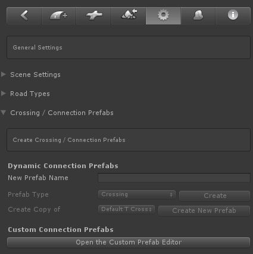
EasyRoads3D supports two systems to create crossings, often referred to as "connection prefabs" because these type of objects do not necessarily have to be crossings, but can also, for example, be mesh based crosswalk prefabs. The main system is the dynamic prefabs system, these are built-in customizable connection prefabs. The second, very powerful system, is the custom mesh prefab system with which you can turn your own models into connection prefabs. You can use this to further customize your road networks whilst still taking advantage of the EasyRoads3D scene workflow.
DYNAMIC CROSSING PREFABS
The dynamic crossing system currently supports creating new standard X , T crossings and roundabout prefabs. This is especially useful when you have many similar types of crossings in the scene. By creating a prefab first, the prefab can be reused in the scene without having to customize it each time. It is still possible to create variations of an instance of this prefab in the scene.
These dynamic prefabs will be stored in:
/Assets/EasyRoads3D/Resources/dynamic prefabs
Dynamic X and T connection prefabs for newly created road types can be created automatically from the road types section , or in this section:
1) Enter a name for the new crossing prefab in the "New Prefab Name" textfield.
2)
Select from the dropdown what type of crossing preset you want to create, crossing or roundabout. You can also create a new prefab from an already existing prefab by selecting this existing prefab from the Create Copy of dropdown. This is useful to quickly create prefabs with variations.
3) Click the Create resp. Create New Prefab (in case you create a copy of an existing prefab) button. This will create the new prefab in the above mentioned folder
At this stage the new prefab can be edited:
1) For Unity 2018.3 and newer versions, the newly created prefab can now be customized through the Unity the prefab editor system introduced in Unity 2018.3. For Unity 2018.2 and earlier versions, hold the SHIFT key and click in the scene. The newly created prefab will be instantiated in the scene as a child of Temp Crossing prefabs because we are only temporarily instantiating it in the scene to customize it.
2) Use the Inspector and scene controls to customize the new crossing prefab, see just below
3) Make sure to click the Save Changes button to update the prefab. But only do this for new prefabs, NOT for instances already used in the scene!
NOTE: Dynamic X and T connection prefabs for newly created road types can be created automatically from the road types section.
Customizing Crossings:
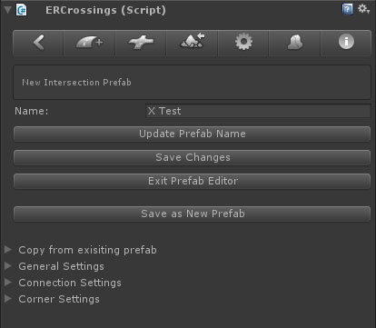
After instantiating new crossing prefabs in the scene you will see the following Inspector:
Name / Update Prefab Name: You can use this to change the prefab name
Save Changes: Use this to regularly save the changes to the prefab
Exit Prefab Editor: Click this button once you are finished customizing the prefab. It will save the final changes and remove the prefab from the scene. You can now start using it by connecting it to an existing road or by adding it directly to the road network.
Save as New Prefab: This will allow you to quickly generate variations of an already customized crossing prefab.
Copy from existing prefab
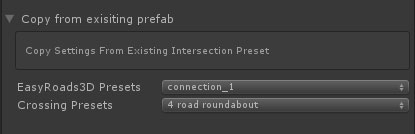
Use this if you want to create a new prefab based on one of the prefabs that come with EasyRoads3D or based on a crossing prefab you already created before
General Settings
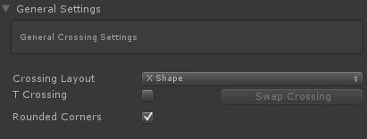
Crossing Layout: This controls the geometry structure and style of the crossing. At this moment only X Shape is implemented. Other options will follow.
T Crossing: This will create a T shape crossing
Swap Crossing: With this button you can control whether the other road connects to left or right side
Rounded Corners: at this moment only rounded corners are supported
Connection Settings
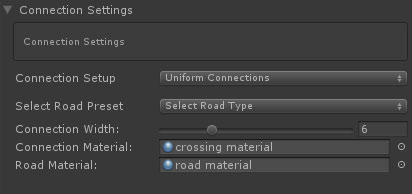
Connection settings refer to the road characteristics at each side of the crossing / connection which can all have their own specific characteristics.
Connection Setup: This dropdown includes three options. Uniform Connections, the selected road settings will be applied to all four connections. Uniform Opposite Connections, the front and back connections share the same settings and the left and right connections share the same settings. Unique Connection, each connection will have its own specific settings.
Select Road Preset: This is where road presets come in useful. Simply select one of the available road presets to set the connection info. Also with regard to future features it is strongley recommended to use this workflow instead of manually adjusting individually settings such as the width here below. Of course you can still do this for a specific road in the scene that will not be reused elsewhere. Creating a new road type only for a single road is not necessary and wouldn't be efficient.
Connection Width: this will be the width of the connection. It will be inherited from the selected road type but could be customized for a single crossing in the scene that will look different.
Connection Material: the material used on this crossing connection geometry
Road Material: The material that will be assigned to roads attached to this connection
Corner Settings
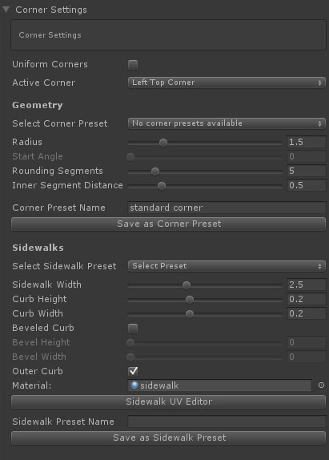
[add scene view image visualizing the above properties]
Each corner of a crossing can have its own properties both for the road corner shape as for sidewalks.
Corner Settings
Uniform Corners: when checked corner changes will be applied to all crossing corners.
Select Corner preset: You can store corner settings further below in the Inspector. Currently saved settings will be displayed here. This can be used to quickly assign the same corner settings to other corners across all crossing / connection prefabs. Simply selected the wanted preset from the dropdown.
Radius: The size of the rounded corner
Start Angle: This option is enabled when the second road is snapped to the main road (like a dirt road to an asphalt road). This way you can create flexible non 90 degree roundings.
Rounding Segments: Use this to get the desired geometry resolution for the rounding
Inner Segment Distance: This controls the distance of the inner row road vertices and depends on the nature of your road texture, the thickness of markings or other design elements at the sides of the roads that need to be preserved.
Corner Preset Name: As mentioned you can assign presets to a corner. Here you can enter the preset name if you want to store the current settings as a new preset
Save as Corner Preset: Click this button to store the current corner settings as a new preset after entering a name
Sidewalk Settings
Select Sidewalk Preset: Just like with crossing corners, you can create presets from the current sidewalk settings. This can be used to quickly assign the same sidewalk settings to other sidewalks across all crossing / connection prefabs. Simply select the required preset from the dropdown.
Sidewalk Width: The full width of the sidewalk
Curb Height: The height of the sidewalk
Curb Width: In order to accurately assign UVs in corner roundings additional vertices will be generated. The width of the curb depends on your sidewalk texture. You can manually adjust the UVs further below through the Sidewalk UV Editor explained further below
Beveled Curb: This will generate more complex geometry for the sidewalk
Bevel Height: The height of the additional segment. Keeping this at 0 will create a diagonally shaped sidewalk
Bevel Width: The width of the added diagonal segment.
Outer Curb: This will add a extra triangles at the outer side to the road level
Material: The sidewalk material
Sidewalk Preset Name: Here you can enter the preset name if you want to store the current sidewalk settings as a new sidewalk preset
Save as Corner Preset: Click this button to store the current sidewalk settings as a new preset after entering a name
Sidewalk UV Editor: EasyRoads3D will auto assign UVs based on the above settings. Optionally you can fine tune these UVs. The Sidewalk UV EDitor button will open a window that will display the texture assigned to the above selected material. Depending on the chosen complexity of the sidewalk geometry you will see handles at the bottom. Moving these handles will auto update the UVs in the scene. Click here for more info.
Connection Handles in the Scene:
- Near each crossing corner 3 sphere handles are displayed. The middle handle controls sidewalk rendering for this corner in general. The outer two handles control whether sidewalks should be added to roads connected to these crossings.
- You will also see grey handles in the center of each crossing. After clicking the grey handle it will display in white, the connection prefab will be aligned according the to this connection attached road direction.
Inspector > UV Editor button
The UV Texture window will appear with the selected road texture displayed on the canvas. This window can be used to correctly map the sidewalk UVs. Drag the green handles horizontally. You will see that the UVs update directly in the scene. It is recommended to start with the sidewalk on the left side of the connection (looking towards the center of the object). If the sidewalk on the right side matches you can afterwards click the mirror button, this will mirror the left hand UVs for the right side.
If a handle appears to be undraggable, deselect and reselect it!
Customizing Roundabouts:
[to do: describe this process, the workflow is almost identical to customizing dynamic crossings]
NOTE: It is recommended to set the Radius and Resolution first before adding connections. You can adjust both afterwads but it could be that connections cannot be created anymore because there is not enough space to fit the connections based on the current settings. This will be optimized further, for now focus on the handles displayed in the scene. These handles represent the selected connection position. Move all connections so the associated handles do not overlap. The roundabout will be rebuild as soon all connection positions do not overlap each other. Alternatively change the radius of connections or increase the radius and /or resolution.
CUSTOM CROSSING PREFABS [Pro]
Custom connection prefabs are mesh based prefabs prepared to be used within the EasyRoads3D system. These can be your own unique models created in a modelling app. The system supports prefabs with child objects and submeshes. Currently all prefab mesh data will be read in.
http://youtu.be/yDUhBZg7tQM - customized road networks - Part 1
http://youtu.be/qxeLHG7K9xQ - customized road networks - Part 2
This is how it works:
1. Select the General Settings tab from the toolbar in the Inspector.
2. Open the Crossing / Connection Prefabs foldout.
3. Click Create New Custom Prefab, the Custom prefab window will appear.
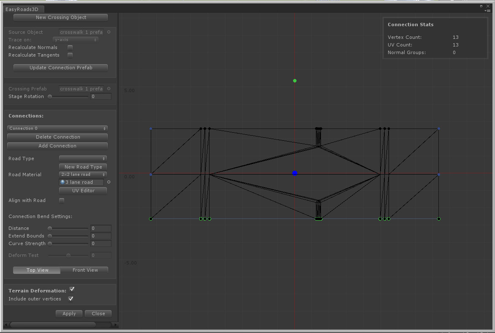
4. Drop your mesh object from the project folder on the stage. It will be assigned to the Source Object slot at the top left.
5. Make sure the geometry is displayed top down. Try a different axis from the Trace dropdown if this is not the case.
6. Recalculate Normals. This will assign normals to the mesh using Unity's Mesh.RecalculateNormals() which is also used on the generated roads. It can be useful to achieve a smooth transition from the crossing to the road.
7. Recalculate Tangents: This will recalculate the tangents which is required when a different roation was applied above in Trace On:
8. Click Build Connection Prefab. This will create the new custom crossing prefab in the folder /Assets/EasyRoads3D/Resources/custom prefabs
9. The next step is to assign the vertices that will connect to roads attached to the first connection. This is done by drawing a rectangle (Shift + Left Mouse Button+ Drag) around these vertices holding the Shift key. For complex meshes you can use Stage Rotation so the required vertices fit nicely inside the rectangle. The selected vertices will be highlighted in green.
10. After selecting the connection vertices the system will check the list of available road types for matches and will auto select a matching road type. You can change this when there are more matches.
11. Click New Road Type to create a new road type for this connection. This is optional. The advantage is that this road type will be auto selected for other generated connections matching this connection. You will also be able to auto activate side objects to this road types which will be automatically assigned to these road types in the scene. And you will be able to create these type of roads directly in the scene from the second tab on the left in the Insepctor. Note: This does require road shape data, if no nodes have been selected yet for this connection, the button will be disabled.
12. Select the road material for the attached road from the Road Material drop down or assign it manually by dropping the material from the assets folder in the material slot below the Road Material dropdown.
13. The UV Editor window allows you to make changes to the UV layout used on roads attached to this connection.
Click here for more info.
14. If you want the connection to align with the connected road angle, you can set additional bending settings. Use Distance and Extend Bounds to set the bending strength and affected vertices. You can test the bending through the Deform Test slider. [All this is currently not yet active]
15. Top View / Front View will switch between displaying the full prefab top down and displaying the selected connection geometry from the front view.
16. To add more connections, Click Add Connection and repeat the steps starting at 9.
17.
In order to deform the terrain according the mesh shape make sure Terrain Deformation is checked. You will see blue points on the stage which will be used as a reference for the deformation shape. This is currently working for standard shapes like crossings and simple objects like crosswalks. More options will follow and will make it possible to customize the deformation shape and have terrain flattening work for more complex shapes.
18. Click Apply to the save the changes.
The new custom crossing prefab will now appear in the list of available custom crossing prefabs in the scene tab when the first or last marker is selected and in the prefabs tab where you can select the new custom prefab and directly instantiate it in the scene.
NOTE: Add connections in clockwise direction preferably starting at the bottom.
NOTE: Already generated custom prefabs can be edited by opening the window and dragging the prefab from the the assets folder (/Assets/EasyRoads3d/Resources/custom prefabs/) directly on the stage or in the Crossing Prefab slot.
NOTE: In order to be able to edit custom prefabs in a later stage, do not remove the original mesh object from the assets folder.
NOTE: The terrain will be flattened according the local Y=0 position. Depending on the model type, make sure that all vertices are at Y = 0 or higher.
NOTE: to avoid z-fighting / flickering make sure to use one of the EasyRoads3D shaders on the material assigned to the custom prefab.
NOTE: Although this system should support relatively complex shapes (also none roads related), connections should always point outwards relative to the center of the object. Meaning, roads/tracks connected to this crossing should move away from the center at the connection point which usually is the case for road type of networks. So make sure the center of the mesh bounding box is at the pivot point, the larger blue dot in the image above.
NOTE: The system supports, non "flat" connections for prefabs that do n ot connect with the terrain. This is useful to create for example bridge elements as part of the road geometry. Please check the example prefabs in the package on how to set this up. Important is that the UVs of the vertices where the geometry connects are accurate, 0 resp 1. A small inaccuracy of up to 0.01 will work but you do want to stay within this margin. If the connection does not extract well, this is the first thing to double check. Also make sure to not close the connection area with triangles that will not be visible anyway after connecting roads.
NOTE: This custom crossing prefabs system has been tested with a large number of different meshes. Models however can have any arbitrary shape. If you experience issues when using this system with your own models, please report this with preferably the source mesh included by contacting us at info@unityterraintools.com
UV EDITOR
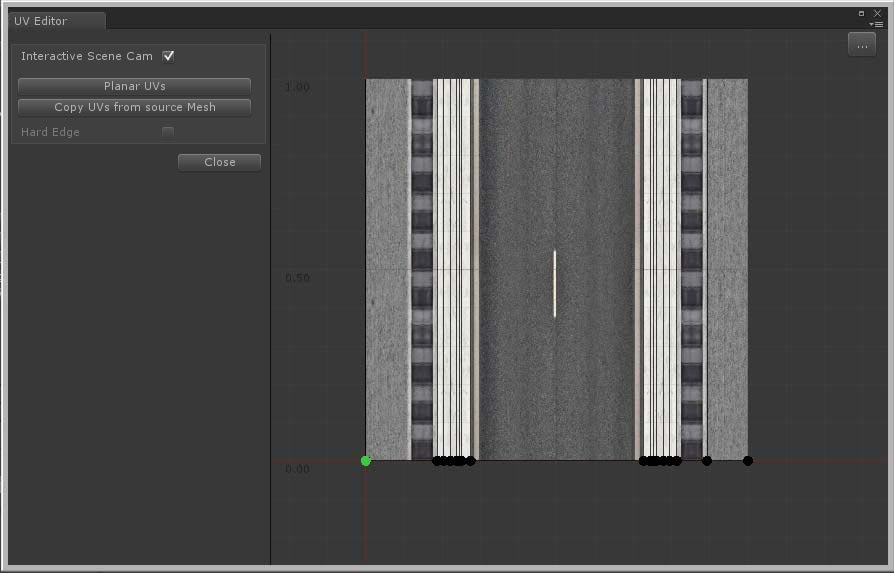
The UV Editor window can be used to make changes to the UV layout for dynamic crossing sidewalks and road connections added to custom crossing prefabs. By default UVs are calculated within the 0..1 range based on the distances between these vertices.
The textures assigned to the used material for these objects is displayed on the canvas. At the bottom you will see the UVs positions per vertex. If this is not accurate, You can move these points to the matching position on the texture.
- Planar UVs: This will auto generate the UVs ignoring the Y position of the vertex.
- Copy UVs from source mesh: This option is displayed when the UV Editor window is opened from the Custom Crossing Editor window. It will set the U coordinate to the same U value as the matching vertex. You can use this to quickly assign UVs when the road material texture exactly matches the texture used on the source prefab for the connection vertices.
- Hard Edge: This option is displayed when the UV Editor window is opened from the Custom Crossing Editor window. By default the road mesh should inherit the normal groups of the source mesh. "Hard Edge" represents smooth or hard edges on matching triangles for the selected node (this is read only).
Note: When the UV Editor window is opened from the Custom Crossing editor, selecting a point will highlight the corresponding vertex in the Custom Crossing editor window. This way you can see for which vertex you are adjusting the UVs.
Note: When using Copy UVs from source Mesh and the connection has a closed geometry structure (the first and last vertex positions are the same), usually these vertices use x = 0 and x = 1 as the UV coordinate. It could be that these values are assigned to the wrong vertex and need to be swapped. You will clearly see this in the scene after attaching a road, the full texture is visible between two vertices. Swapping the UVs is done by dragging the most left (0) to the most right position (1) and the most right to the most left. [Add this to trouble shooting as well]
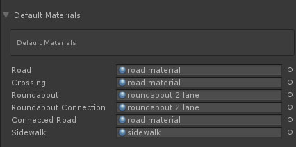
Here you can set the default material which will be auto applied when creating new roads, crossing or roundabout prefabs.
[WIP] This section also includes options to set texture info. For now you can define lane marking info. This info will be used in new crossing features available in v3.x but it can also be used to automatically generate base textures for roads with different width to make that sure outer lanes connect nicely on crossings between these roads with different widths.
- Road Material: The list with available materials in /Assets/EasyRoads3D/Resources/Materials/roads. This will use the texture assigned to this material as the source texture. Make sure it is Read/Write enabled in the Import Settings.
- Default Road Width: The road width for that particular texture.
- Left Inner Offset: The left side of the left lane (currently not used)
- Left Offset: The right side of the left lane
- Right Offset: The left side of the right lane
- Right Inner Offset: The right side of the right lane (currently not used)
- Texture Info Button: This will open the Texture Editor Window. Here you can easily drag handles to set the above 4 values
- Save Changes Button: This will store the info in the project data
- Texture Utility Button: This will open the Texture Utility window
- Source Texture: The texture assigned to the selected material
- Target Texture: This is optional, this texture will be updated according the generated texture. If this texture slot is empty you will beasked where to save the generated texture
- Road Width: The road width of the source texture. This will be auto set to the Default Road Width mentioned above.
- Left Offset: The left offset value used to generate the texture. This will be auto set to the Left Offset value mentioned above.
- Right Offset: The right offset value used to generate the texture. This will be auto set to the Right Offset value mentioned above.
- Target Road Width: The width of the road to which this new texture will be assigned.
- Blend Pixels: This will add additional pixels inside so you can easily blend the generated outer sides of the texture with middle part of the texture
- Generate Texture button: This will generate the final texture. Afterwards you can open it in your paint program to create the final texture.
LOD GROUPS [Pro]
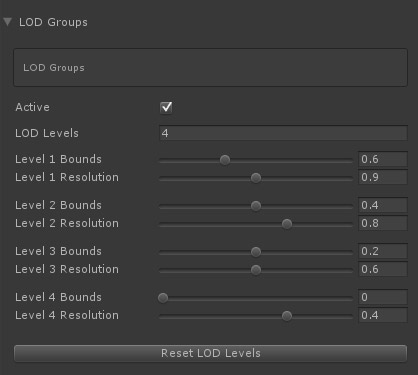
The LOD Groups option will create different LOD levels of the road meshes according the above settings.
- Active: Activates the LOD Groups system
- LOD Levels: The number of LOD levels
- Bounds: The transition change based on the bounds of the road mesh relative to the screen
- Resolution: The LOD
level resolution of the road mesh in percentages with a minimum scale of 10% of the original mesh
NOTE: In order to actually create the LOD groups Build LOD Groups in the Build Settings must be active.
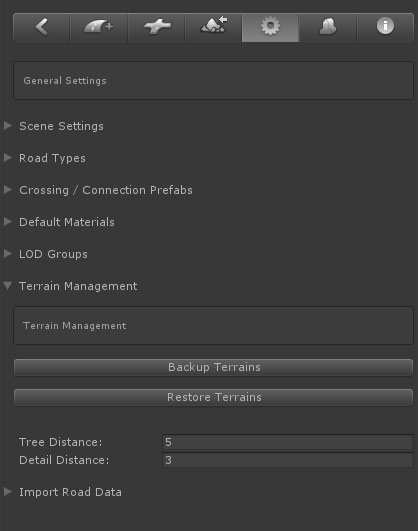
EasyRoads3D will alter the Unity terrain object(s) in the scene. Here you can create backups and restore your original terrains. Whenever a new terrain object is detected in the scene you will be asked to create a backup. It is recommended to do so. It is also recommended to update these backups after manual changes to the terrain to keep these backups up-to-date.
The backup / restore options are also displayed in the Inspector of each individual terrain object in the scene.
Alternatively you can also for example create backups of your terrain by duplicating the corresponding terrain asset in the project folder. Simply drag this terrain asset in the scene to replace the corresponding terrain you want to restore.
Tree Distance and Detaild Distance refer to the surface outside the road where trees and detail objects should be removed.
Vegetation Studio
EasyRoads3D supports Vegetation Studio. If Vegetation Studio is present, there will be options for adding either a Vegetation Studio Mask Line component or a Biome Mask Area component and an activation checkbox. Road type specific perimeters or biome mask options can be set for that road type in General Settings > Road Types
Road data from external sources can be imported directly into EasyRoads3D v3. The roads will be created automatically.
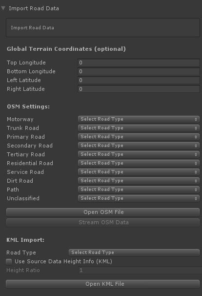
By default EasyRoads3D will match the bounds in the data file with the bounds of the terrain. However, if the coordinates do not exactly match those of the terrain, the terrain bounds can be entered in the corresponding terrain longitude / latitude fields. The data will be parsed relative to these terrain coordinates.
WORKFLOW
Open Street Map
Visit openstreetmap.org , zoom in to the location of your choice. Click the green "Export" item at the top. You will see lon lat coordinates and additional info at the left. Click the blue "Export" button. This will generate an *.osm file.
For OSM data EasyRoads3D road types can be linked to OSM road type. For each OSM road type select the EasyRoads3D road type from the dropdown.
For KML files a single road type can be selected. Click the Open OSM File button in the Inspector and select the downloaded file. The system will extract the data and create the roads.
Notes: The Stream OSM Data option is not yet functional.
|